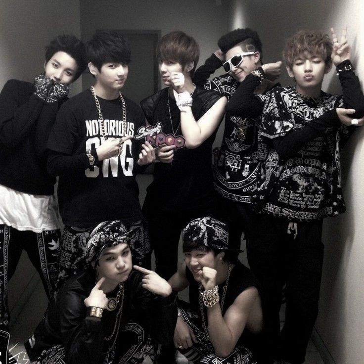
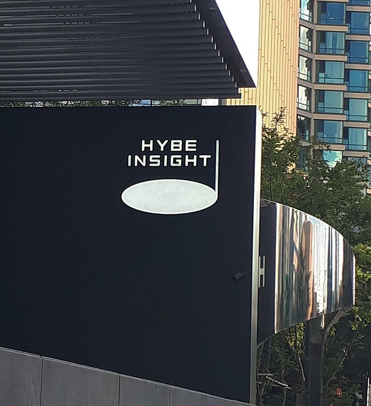
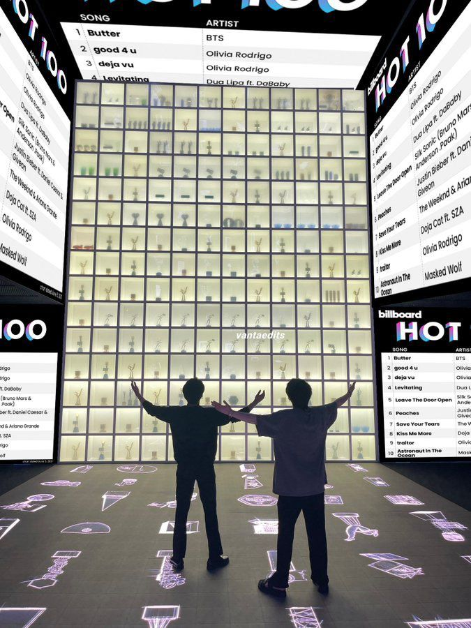

RM adalah member pertama yang direkrut oleh agensi Big Hit Entertainment pada tahun 2010. Namun awalnya RM direncanakan akan berada dalam duo grup rapper. Hingga akhirnya Big Hit mengubah konsep tersebut untuk menjadi idol group dan segera melakukan audisi untuk menemukan member lainnya. Di tahun yang sama, Big Hit berhasil merekrut J-Hope karena kemampuan menarinya yang luar biasa. Selain itu juga ada Suga dan Jin yang ikut bergabung. Meski awalnya tertarik dengan akting dan berminat menjadi seorang aktor, Jin nyatanya tetap bergabung dengan BTS. Selanjutnya ada Jungkook yang turut bergabung karena telah lebih dulu mengagumi RM yang memiliki kemampuan rap luar biasa. Padahal melansir dari Koreaboo, saat itu telah banyak agensi besar yang memberikan tawaran pada Jungkook untuk bergabung. Setelah itu ada Kim Tae Hyung atau V yang bergabung secara tak sengaja. Saat itu V sedang mengantarkan temannya untuk audisi, namun staf agensi menawarinya untuk ikut audisi juga dan akhirnya lolos. Sementara member terakhir yang bergabung adalah Jimin yang mengikuti audisi atas saran guru sekolahnya yang melihat bakat menarinya. Member BTS pun semakin lengkap dengan kehadiran Jimin kala itu.
Setelah semua member melakukan trainee, akhirnya BTS secara resmi melakukan debut pada Juni 2013. Tanggal 12 Juni 2013, video klip lagu No More Dream dirilis di youtube Hybe Labels. No More Dream menjadi lagu bergenre hiphop yang dipilih sebagai lagu debut. Lagu tersebut merupakan bagian dari album 2 Cool 4 Skool yang menjadi album perdana BTS. Anda masih bisa menyaksikan video klip tersebut hingga saat ini. Lalu di tanggal 13 Juni 2013, agensi memperkenalkan ketujuh member BTS dan melakukan panggung debut pertama di stage MCountdown.
Big Hit Entertainment bukan merupakan agensi besar bahkan bisa dibilang agensi baru saat BTS bergabung. Untuk itu mereka harus melalui perjalanan panjang yang berliku. Melansir dari Kapanlagi, di awal perjalanan karier BTS bahkan harus rela latihan dan tinggal di asrama yang tidak begitu luas. Mereka juga harus rela untuk makan di restoran yang kecil dan murah. Selain itu, mereka juga pernah mengalami kesulitan untuk memenuhi biaya produksi video klip. Namun, BTS tetap semangat dan tidak berputus asa. Mereka berkomitmen untuk bersama-sama merintis karier bersama pihak agensi meski saat itu banyak yang menyebutnya agensi miskin. Hingga akhirnya mereka mampu merasakan hasil dari kerja keras yang mereka lakukan selama ini. Big Hit Entertainment pun kini menjadi agensi yang bisa disejajarkan dengan agensi besar lain seperti JYP Entertainment dan SM Entertainment.
Di tahun 2014, BTS melakukan debutnya di Jepang. Mereka mengeluarkan album 2 Cool 4 Skool Japan Edition dan kemudian studio album Wake Up. Mereka mendapat sambutan yang hangat dari para penggemar di Jepang. Selain itu mereka juga merilis mini album kedua yaitu Skool Luv Affair dengan single Boy in Luv. Single tersebut kemudian meledak dan membuat nama BTS semakin dikenal. Boy in Luv bahkan masuk ke dalam posisi 5 di Chart US.
Kesuksesan BTS terus berlanjut dan semakin diakui berkat banyaknya penghargaan yang mereka raih. Bukan hanya tingkat nasional, tapi BTS juga kerap menjadi nominasi dan memenangkan berbagai penghargaan Internasional. Video klip DNA bahkan berhasil memecahkan rekor dunia sebagai video klip yang paling banyak ditonton. Dalam 24 jam pemutarannya, klip tersebut sudah ditonton sebanyak 20,9 juta kali. Hingga saat ini, video klip itu bahkan sudah ditonton sebanyak 1,4 milyar kali. Bukan hanya trending di Youtube, lagu DNA juga masuk dalam tangga lagu Billboard Hot 100. Lagu yang dirilis tahun 2017 itu juga mengantarkan BTS sebagai artis Korea pertama yang tampil dalam ajang American Music Awards di tahun 2017. Puncaknya BTS meraih penghargaan sebagai Artist of The Year pada American Music Awards 2021. Melansir dari Kapanlagi, hingga saat ini BTS telah meraih 392 penghargaan dari 532 nominasi yang mereka dapatkan.
Kesuksesan BTS di Amerika Serikat semakin diakui setelah memenangkan beberapa penghargaan dari Billboard yang kemudian membawa mereka untuk berkolaborasi dengan penyanyi Halsey lewat lagu Boy with Luv. Hingga kemudian pandemi COVID-19 di tahun 2020 menghantam seluruh dunia. Meski begitu, BTS tidak pernah berhenti berkarya. Album mereka Map of the Soul dan BE yang dirilis di tahun 2020 justru meraih kesuksesan besar. Lagu-lagu seperti Life Goes On dan Dynamite justru membawa BTS ke puncak kesuksesan. Ditambah lagi dengan kemunculan lagu Permission to Dance dan Butter yang menduduki puncak tangga lalu di Amerika Serikat. Buah dari kesuksesan tersebut bisa terlihat dari konser Permission to Dance di Amerika Serikat yang dipenuhi penonton. Meski diadakan selama beberapa hari, seluruh tiket konser terjual habis. Artis Indonesia seperti Ayu Ting Ting dan Luna Maya juga turut serta menonton konser BTS di Amerika.
Besarnya pengaruh BTS terhadap penggemarnya membuat idol group ini mendapat kesempatan untuk turut serta dalam berbagai kampanye. Termasuk menjadi perwakilan Korea Selatan untuk pidato dalam sidang umum PBB di tahun 2021. BTS bahkan mendapatkan paspor diplomatik dari pemerintah Korea Selatan. Dalam kesempatan itu, BTS menyampaikan kepada anak muda di seluruh dunia untuk tetap semangat dan terus berkarya di bidang masing-masing. Meski dunia dilanda pandemi, BTS mengajak anak muda untuk tidak berputus asa dan justru mengambil banyak pelajaran dari adanya pandemi. Beberapa waktu lalu BTS juga diundang oleh Joe Biden untuk datang ke White House. BTS diundang untuk menyampaikan kampanye mengenai anti-asian hate. BTS menyampaikan agar anak-anak muda keturunan Asia di Amerika tidak berkecil hati dan melawan segala bentuk tindak diskriminasi yang dialami. Sementara itu, BTS juga menyampaikan imbauan untuk menghentikan segala bentuk rasisme dan diskriminasi terhadap seluruh umat manusia. Bagi mereka tidak ada satu orang pun yang pantas mendapat perlakuan diskriminasi. Nah itulah kisah perjalanan karier BTS dari awal debut hingga sekarang menjuadi idola dunia. Tak heran ya bila kini mereka menjadi boy group tersukses di Korea Selatan.
Oh iyaa!!!Bts pernah ngadain konser gratis di koreaa lohhh....itu adalah konser terakhirnya mereka ber7 seblum mereka berangkat wamill...setalah itu mereka satu persatu berangkat wamil dan ada yang melakukan concert world tour tunggalnya...tapi 2024 ini mereka semua sudah berangkat wamil dan akan kembali pada tahun 2025...
i miss bangtan!!!